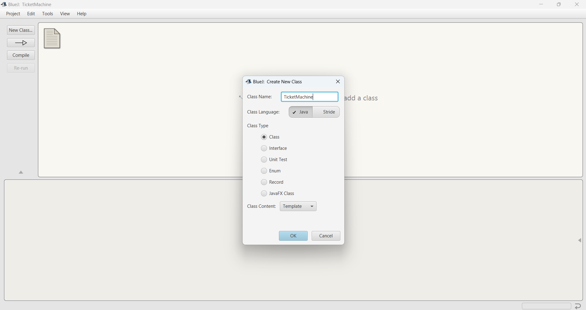
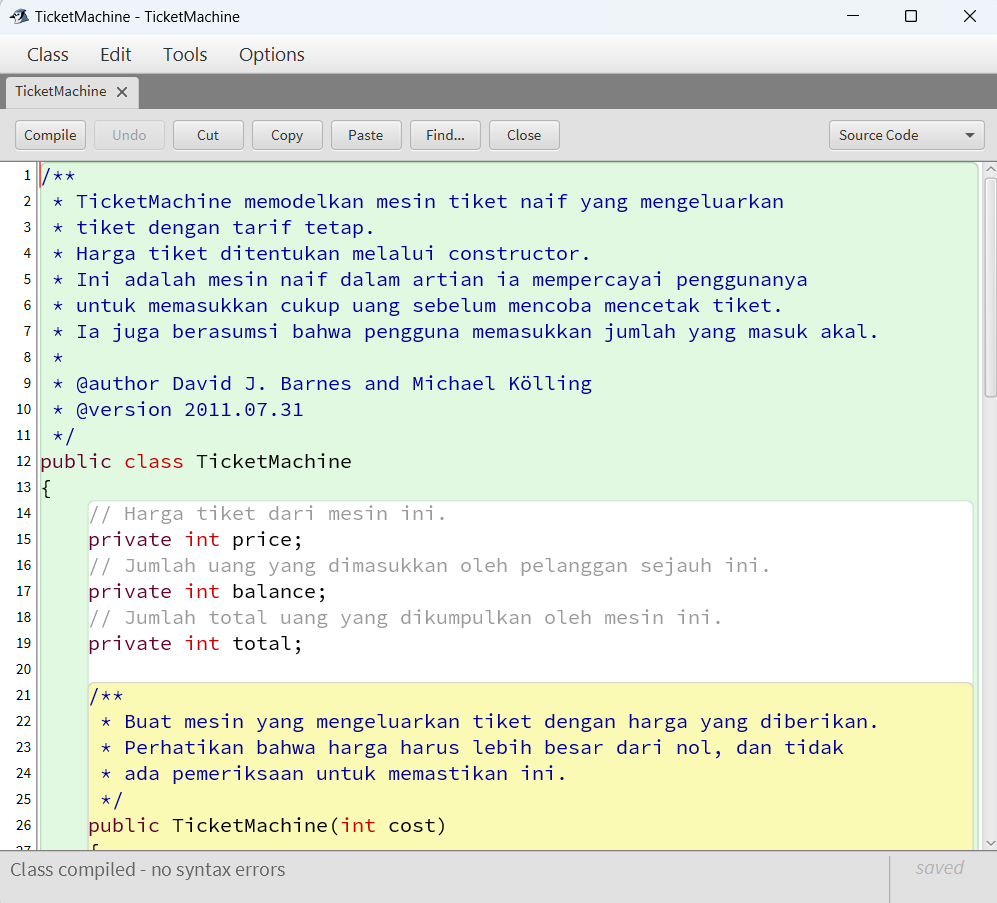
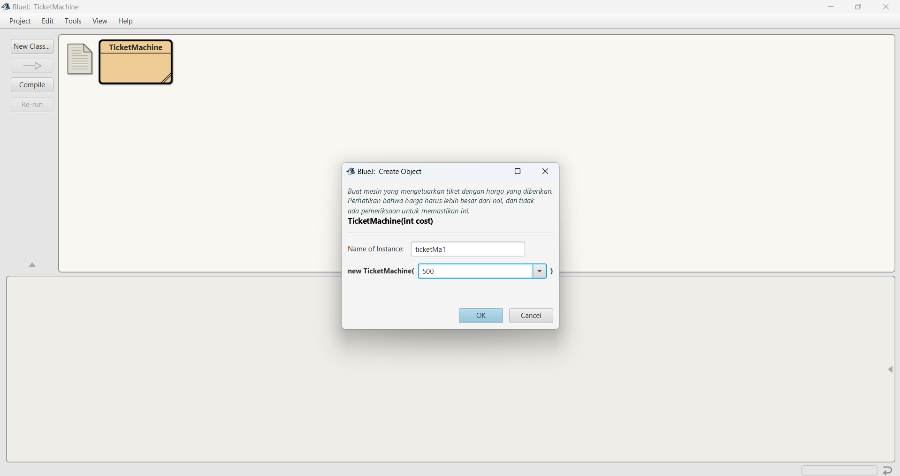
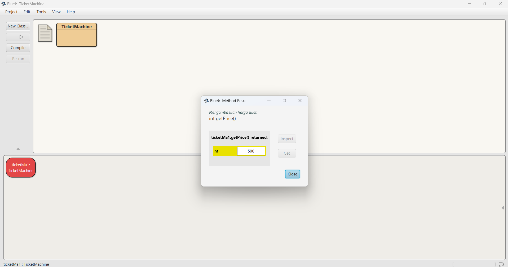
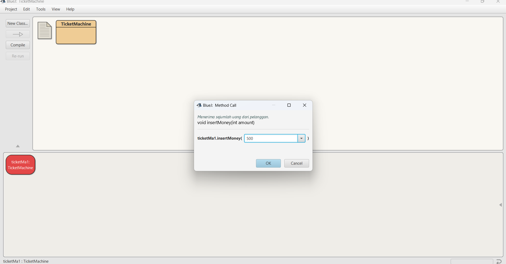
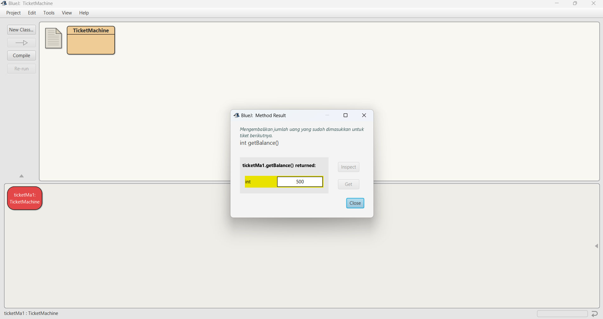
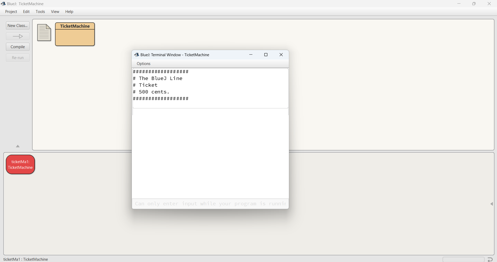

Tugas BlueJ: Ticket Machine
Nama: Ageng Prayogo
NRP: 5025241225
Kelas: B
Langkah-langkah Pengerjaan
Berikut adalah langkah-langkah yang saya lakukan, disertai dengan screenshot.
1. Membuat Proyek dan Kelas

Screenshot saat membuat Project TicketMachine.
Screenshot saat membuat kelas TicketMachine.
2. Mengisi Kode dan Compile
Screenshot setelah kode berhasil di-compile tanpa error.
3. Hasil Interaksi dengan Objek
Screenshot create objek di BlueJ.
Screenshot getPrice() di BlueJ.
Screenshot insertMoney(int amount) di BlueJ.
Screenshot getBalance() di BlueJ.
Screenshot print() di BlueJ.
Screenshot getBalance() di BlueJ.
Source Code
Kode yang saya gunakan pada kelas `TicketMachine` adalah sebagai berikut:
/**
* TicketMachine memodelkan mesin tiket naif yang mengeluarkan
* tiket dengan tarif tetap.
* Harga tiket ditentukan melalui constructor.
* Ini adalah mesin naif dalam artian ia mempercayai penggunanya
* untuk memasukkan cukup uang sebelum mencoba mencetak tiket.
* Ia juga berasumsi bahwa pengguna memasukkan jumlah yang masuk akal.
*
* @author David J. Barnes and Michael Kölling
* @version 2011.07.31
*/
public class TicketMachine
{
// Harga tiket dari mesin ini.
private int price;
// Jumlah uang yang dimasukkan oleh pelanggan sejauh ini.
private int balance;
// Jumlah total uang yang dikumpulkan oleh mesin ini.
private int total;
/**
* Buat mesin yang mengeluarkan tiket dengan harga yang diberikan.
* Perhatikan bahwa harga harus lebih besar dari nol, dan tidak
* ada pemeriksaan untuk memastikan ini.
*/
public TicketMachine(int cost)
{
price = cost;
balance = 0;
total = 0;
}
/**
* Mengembalikan harga tiket.
*/
public int getPrice()
{
return price;
}
/**
* Mengembalikan jumlah uang yang sudah dimasukkan untuk
* tiket berikutnya.
*/
public int getBalance()
{
return balance;
}
/**
* Menerima sejumlah uang dari pelanggan.
*/
public void insertMoney(int amount)
{
balance = balance + amount;
}
/**
* Cetak tiket.
* Perbarui total yang terkumpul dan
* kurangi saldo menjadi nol.
*/
public void printTicket()
{
// Simulasi pencetakan tiket.
System.out.println("##################");
System.out.println("# The BlueJ Line");
System.out.println("# Ticket");
System.out.println("# " + price + " cents.");
System.out.println("##################");
System.out.println();
// Perbarui total yang terkumpul dengan saldo.
total = total + balance;
// Kosongkan saldo.
balance = 0;
}
}